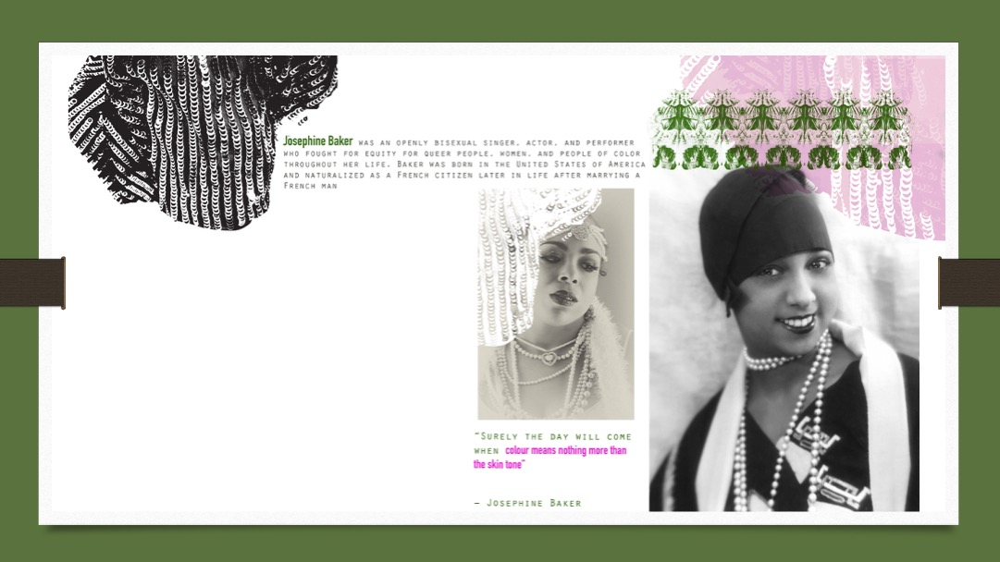

Creating Stencils & Digital Brushes
Example: Stencils & Digital Brushes

This example shows the use of stencils & Digital Brushes creatively used within a research page.
What You Need to Bring
- Scanned oil pastel sheet (high resolution 300dpi)
- 2-3 scanned A3 sheets from class
- 2-3 images for cutting shapes
- Computer with Photoshop installed
- USB drive or cloud storage access
Important: All scanned images must be in JPG format at high resolution (300dpi minimum). Low quality images will not work well for making digital brushes.
Workshop Tasks Overview
During the workshop, you will complete the following tasks:
Task 1: Stencil Application
- Turn image into stencil using threshold
- Cut stencil shape into oil pastel texture
Task 2: Digital Brushes
- Turn stencil into custom brush
- Create artwork using your brush
Task 3: Documentation
- Take screenshots of your process
- Upload your work to Padlet
Note: Please complete your preparation before class to maximize workshop time.